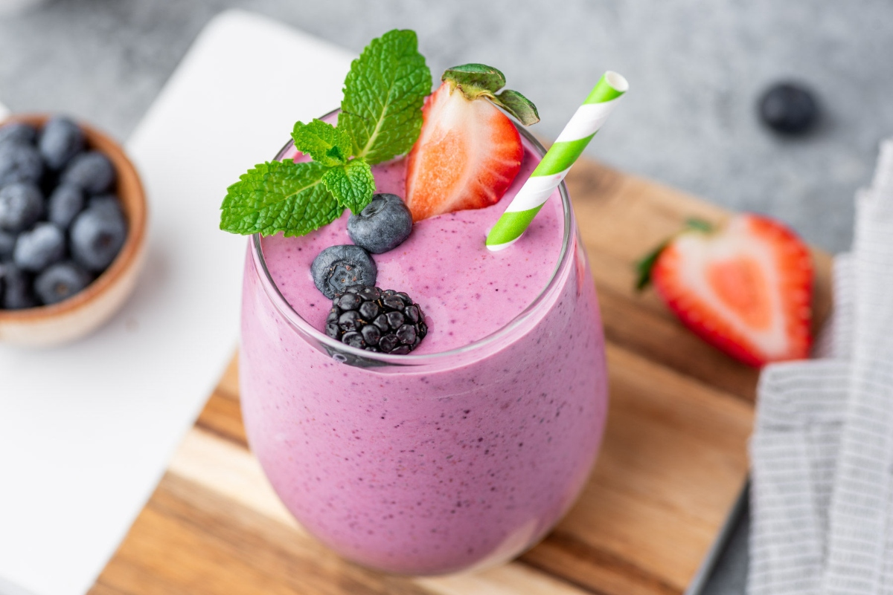

Berry Smoothie

Description
This berry smoothie is perfect for a summertime treat! While this recipe usese strawberries, blueberries, and raspberries, feel free to add in or substitute any berry of your choice.
Some of my personal favorites are cranberries for a bit of tartness, or blackberries for a deeper flavor.
Ingredients
- 1/4 frozen avocado (in chunks)
- 1.5 cups almond milk
- 1/2 cup frozen strawberries
- 1/2 cup frozen blueberries
- 1/2 cup frozen raspberries
1 tablespoon honey
Steps
- Place chopped frozen berries, avocado, almond milk, and honey into the blender
- Blend on pulse. If the smoothie is too thick and not blending properly, add more almond milk
- Pour into a glass and enjoy!